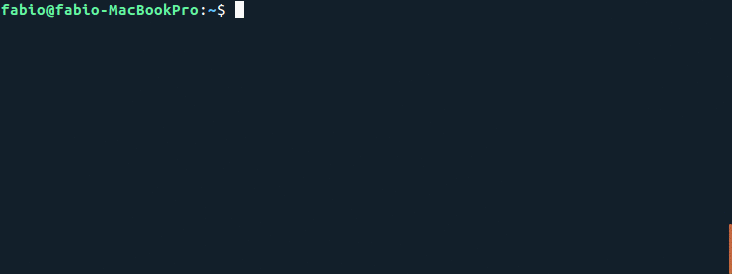
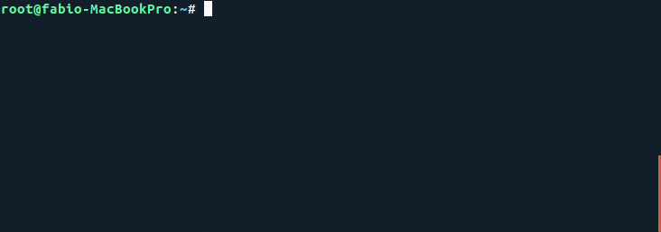

PyInvestor
PyInvestor is a python wrapper for the IEX API.


Documentation
The documentation related to the details of the different methods of PyInvestor is found here: https://samurai-sarl.github.io/PyInvestor/
Features
As of now, PyInvestor is a wrapper for the IEX API. However, we have the ambition to grow it and integrate several financial APIs into one single Python library, PyInvestor. Now, some of the features are:
- IEX Stocks app using the stocks endpoint;
- Access to the OHLC of more than 7k stocks;
- Get relevant news at the stock level;
- Access to fundamental data such as dividends, earnings, etc.
Dependencies
- Pandas
- Requests
Installation
pip install pyinvestor
Examples
Market
SectorPerformance
from PyInvestor import market
market.SectorPerformance()

Stock
Earnings
from PyInvestor.stock import Stock
AMZN = Stock('AMZN')
AMZN.Earnings()

Todos
| API | Integration |
|---|---|
| IEX | |
| Quandl | |
| News API |
Legal
As PyInvestor is a wrapper for the IEX API, we have to say that
Data is provided for free by IEX. View IEX's Terms of Use
Developers
Made with :heart: by SamurAI. Follow us on Linkedin to get the latest news first! We're always happy to receive your feedback!